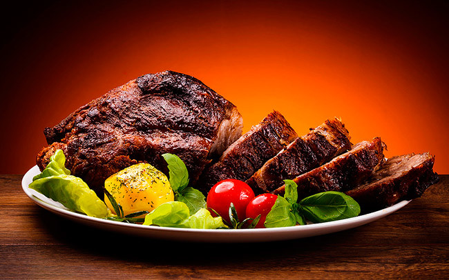
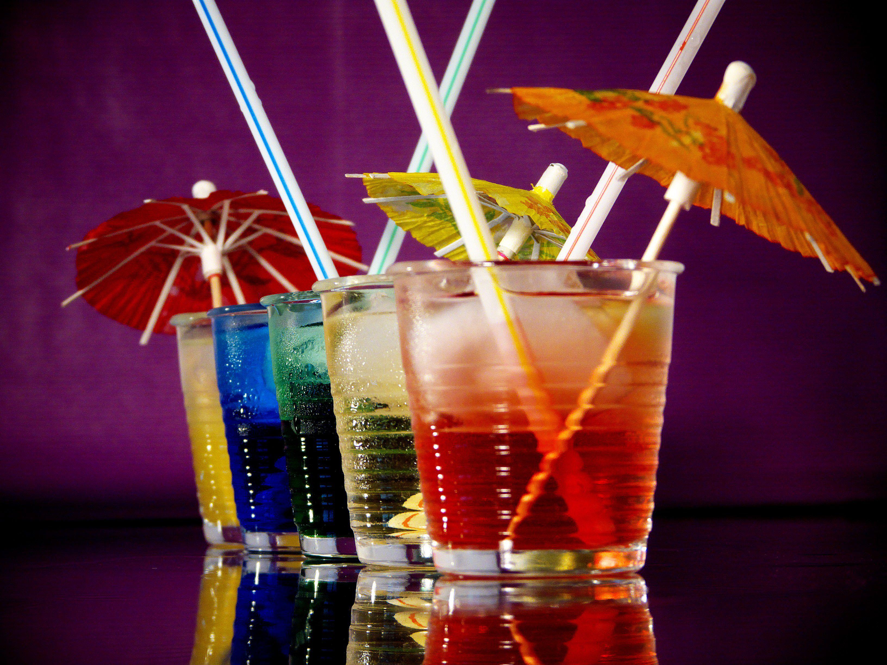

Carne Ansestral
24 de octubre 2018

La carne roja contiene numerosas vitaminas y minerales que son esenciales para una dieta saludable y equilibrada. En los últimos años, sin embargo, su reputación ha sido severamente dañada, con estudios que sugieren que la ingesta de carne roja puede aumentar el riesgo de cáncer y otras enfermedades. Pero, ¿es realmente tan mala para nosotros? Lo cierto es que en los últimos 10 años, el consumo de carne roja ha disminuido alrededor de 4,5 kilogramos por persona, siendo 2014 el año en el que menor cantidad de carne roja se ha consumido desde 1960. ¿Por qué estamos reduciendo el consumo de carne roja? Por el temor que genera el padecer una enfermedad como esa.
Deja un comentario
Publicar Caesy09 Me parece que no tiene comparacion!
Caesy09 Me parece que no tiene comparacion!
 Liam_M ¡Yo no he dejado de consumir carne apesar de lo que dicen
Omaira ¡Por mi parte ya no consumo carne, pero los demas platos exelentes
Jemm_56 Lo que mas me gusta sonlos postres!
Liam_M ¡Yo no he dejado de consumir carne apesar de lo que dicen
Omaira ¡Por mi parte ya no consumo carne, pero los demas platos exelentes
Jemm_56 Lo que mas me gusta sonlos postres!
Los mejores cocteles
07 De diciembre 2007
Esta es la propuesta que Privilegios Gourmet tiene ha para usted: cuatro kits con ginebras de la mejor calidad, de origen francés e inglés,más el complemento perfecto: agua tónica con quinina del Congo.
Deja un comentario
Publicar
Liam_M Ginebra acompaña bien las carnes!
Caesy09 ¡Nunca he probado licor pero lo intentare
Omaira ¡Quiero probar que sabor tiene
Jemm_56 Buena combinacion de licores!